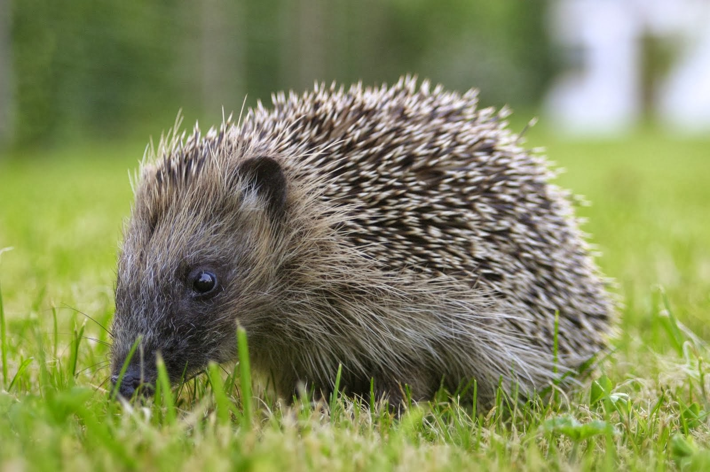

This web page includes featured wildlife of Ireland. With spring coming up, many trees and flowers
are blooming, baby animals are born, wildlife coming out of hibernation...
Lets look at some of the wildlife popular in Ireland as of today.
Squirrel

In Ireland, red squirrels finish hibernating in late winter or early spring, typically around February or March.
Red squirrels are distinguished by their rusty red fur, they become productive again, they search for nuts, seeds,
and fruits in woodland areas.
During this time, they also spend time making baby squirrels, which are born in late spring/ early summer.
Their return in spring means new life in the Irish countryside.
Frog
During the winter months, frogs in Ireland enter a dormant state, also known as brumation, to survive the cold conditions.
They hide in sheltered areas, under logs, rocks, or in muddy ponds, where they are protected until spring. When spring comes,
the frogs come out and look for a partner.
Once a partner is found, the female brings him back to the pond with eggs. In a week or so, these eggs become tadpoles, and then frogs.
Hedgehog

In spring, hedgehogs in Ireland come out from their winter hibernation, during the night, they search of food and mating partners.
They eat various insects and worms. Mother hedgehogs build nests for their babies, called hoglets,
hoglets rely on their parents for care and protection.
Hedgehogs play a vital role in the ecosystem, providing natural pest control and adding beauty to the Irish countryside in springtime.